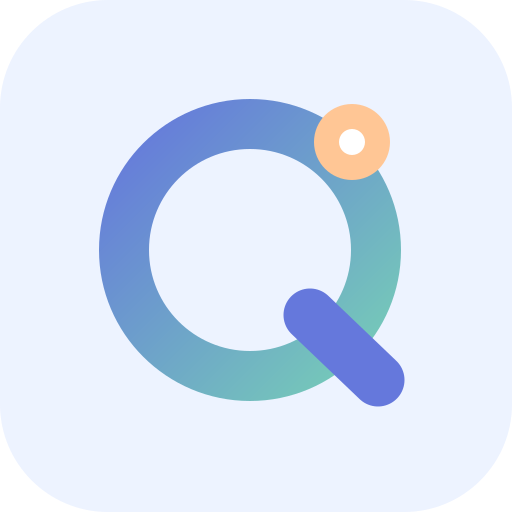

ASTRACCT / PWA
你的余额，
一眼看清。
为 iPhone 与 iPad 准备的独立网页应用。安装后可从主屏幕进入，也能离线查看本机记录。
iOS 首版 · 手动记录模式。 暂不支持原生版的厂商 API 自动查询、后台刷新或原生小组件；切勿在此填写 API Key、云密钥、订阅凭据。
余额账户
数据仅保存在本设备的浏览器存储中，不会同步 Android 或桌面版；请定期导出备份，删除网站数据可能造成丢失。

星账 AstracctIOS WEB APPASTRACCT / PWA
为 iPhone 与 iPad 准备的独立网页应用。安装后可从主屏幕进入，也能离线查看本机记录。
iOS 首版 · 手动记录模式。 暂不支持原生版的厂商 API 自动查询、后台刷新或原生小组件；切勿在此填写 API Key、云密钥、订阅凭据。
数据仅保存在本设备的浏览器存储中，不会同步 Android 或桌面版；请定期导出备份，删除网站数据可能造成丢失。